datafrosch.fun/slides/code-anything
Either use codex or claude code, otherwise:
Download Opencode
Download Python
Hands-on (5–10 min)
- Open ChatGPT, Claude or DeepSeek — chat apps that make interactive artifacts.
- Prompt it to “make a snake game”.
- Have fun with the prompt — make it poop rainbows, make it a space version.
- Play it for a bit, then paste a screenshot & the prompt on the shared board.
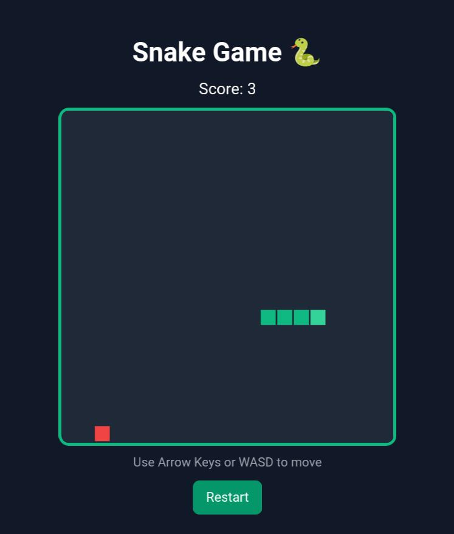
GPT — plain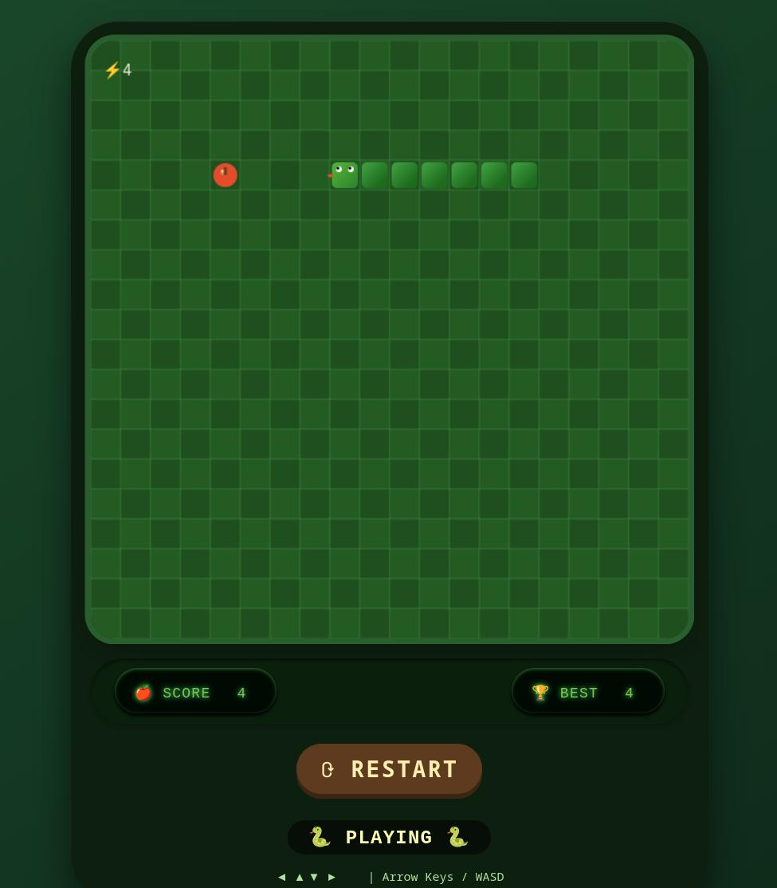
DeepSeek — plain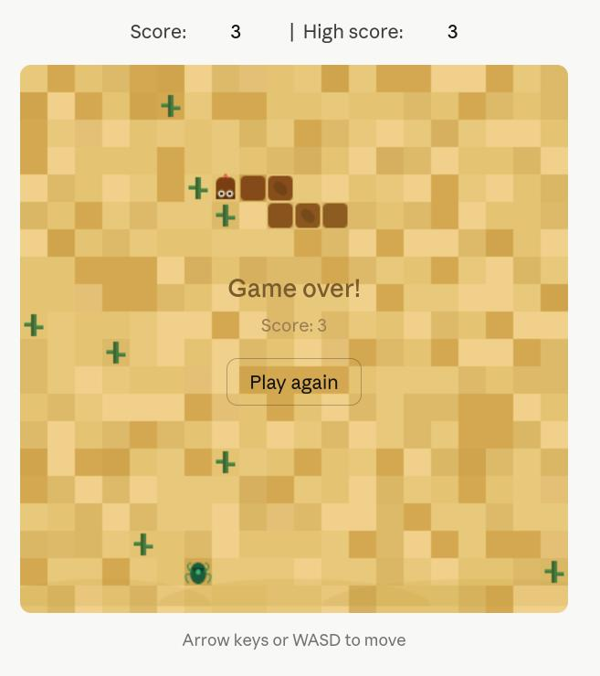
Claude Sonnet — desert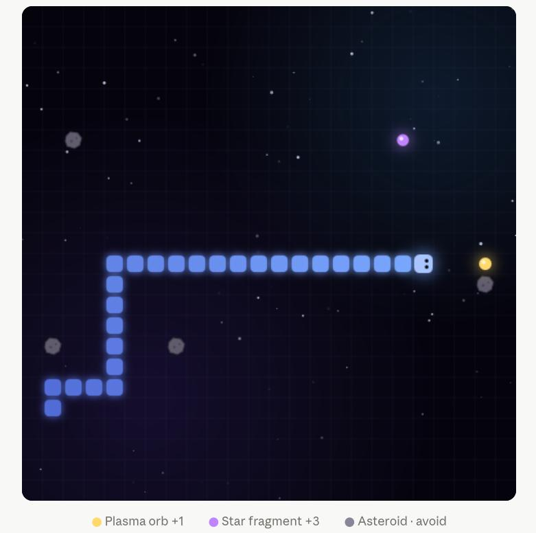
Claude Opus — space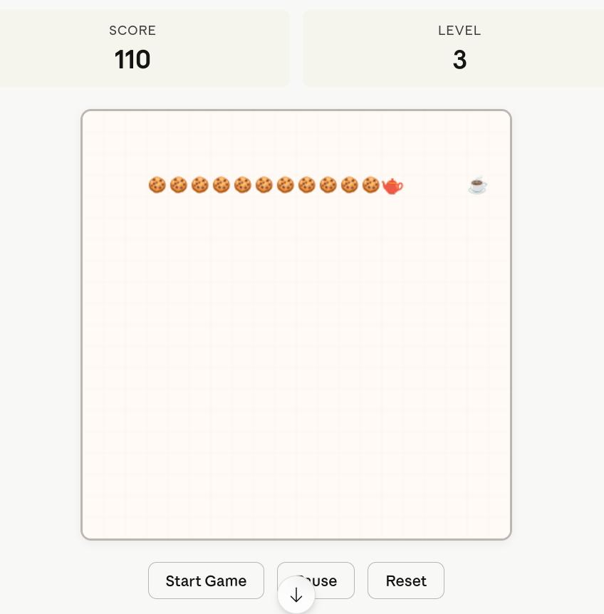
Claude Haiku — tea partyWhat is happening here?
- The model knows what a “snake game” is — thanks to its training data.
- It knows how to make interactive artifacts (JavaScript).
What is happening here?
- But: it will make a lot of arbitrary choices on its own.
- How does it look?
- How does it behave?
- Do walls end the game?
- Are there obstacles?
- Does the snake have eyes?
We don’t want this 🙅♀️
The four pillars
- Prompt
- Context
- Local agents
- Plan → Implement → Review
Prompt

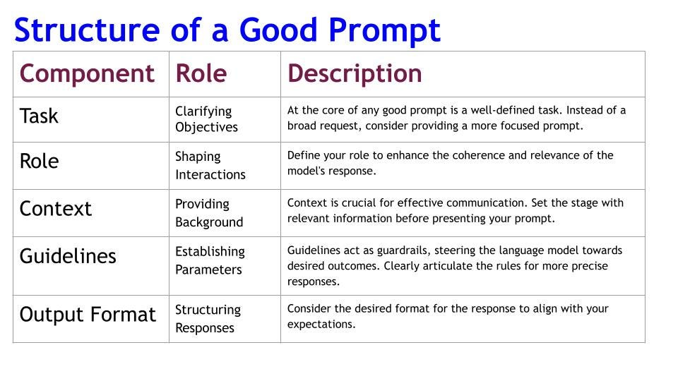
✍️🤖
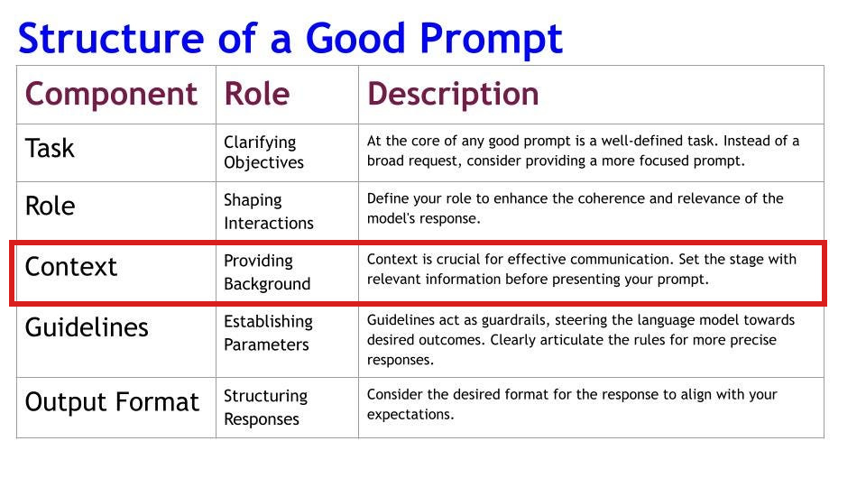
Context
Context:
- Documentation
- Methodology
- Reports
- Examples
- Tools
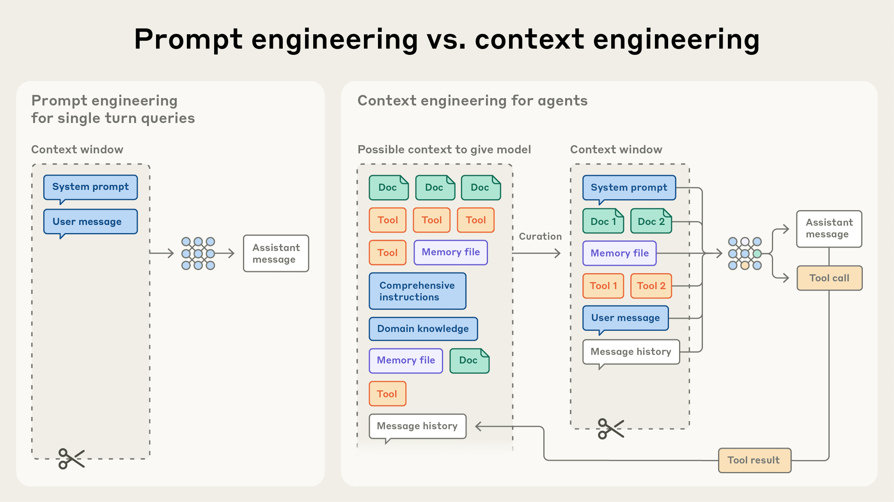
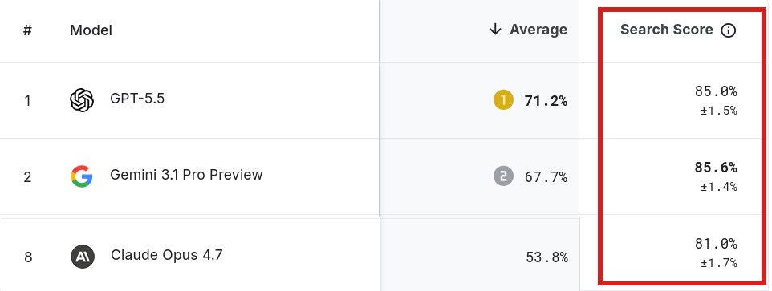
🐍
Core mechanics
Build a snake game in Python. Represent the snake as a list of (x, y) grid coordinates. It moves by adding a new head in the current direction and removing the tail. Arrow keys change direction. Just a snake crawling on a blank grid — no food, walls, or scoring yet.Basic rules
We have a snake as a list of (x, y) coordinates that moves by adding a head and removing a tail, with arrow-key control. Now add three rules, keeping that representation: (1) food at a random empty cell, (2) eating food grows the snake by skipping the tail removal that turn, (3) game ends on collision with a wall or itself.Design & polish
The snake now moves, eats food to grow, and dies on collision. Keep all of that working. Add polish only: a score counter (one point per food), a game-over screen showing the score with a restart key, and simple colours for the snake, food, and background.Good practices
Discuss
Talk through the problem with the model first.
Ask me questions
Make the model probe your assumptions.
The smaller the model, the more important it is to divide the work well.
What is a "smaller" model?
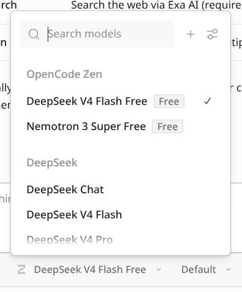
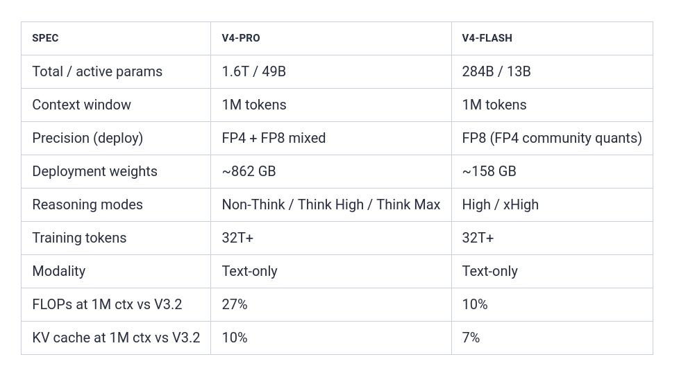
Local
agents
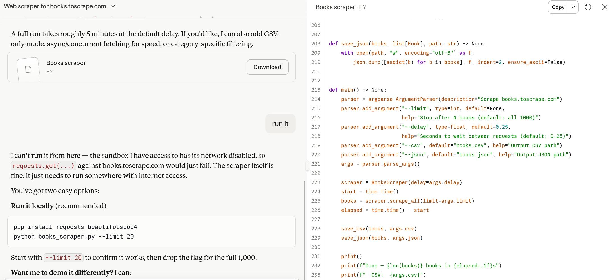
Hands-on: what is an agent? (5 min)
- Ask the agent what an agent is.
- Ask the agent what it can do.
- Ask the agent what tools it has.
Agent
=
a model with the ability to execute tools.
Local Agent
=
uses tools that can read and write files to your computer.
Plan
Implement
Review
Hands-on (15 min)
Make a scraper for books to scrape.
- Plan — discuss what needs to happen with the agent to minimise random behaviour. Use "plan mode".
- Implement — grab the plan and have the agent implement it. Use "build mode".
- Review the output.
Review (for larger projects)
- Automated testing
- Git
Hands-on
Let us help!
- Make a dashboard from the scraped data
- (Start) work(ing) on your own project